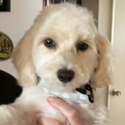
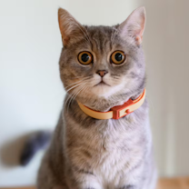
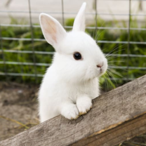

Pawsitive Rescue
Adoptable Pets
To adopt a furry friend all we require is your name, address, and an inspection of your house to make sure you'll be a caring member for your pet.
| Name | Breed | Age | Description | Image |
|---|---|---|---|---|
| Bailey | Labrador Retriever Mix | 2 years | Bailey is an energetic and loyal companion who loves belly rubs and long walks. She's great with kids and ready to join an active family. |  |
| Milo | Domestic Short Hair | 1 year | Milo is a playful, curious cat who enjoys sunny window spots and chasing toy mice. He's fully vaccinated and litter trained. |  |
| Daisy | Beagle | 3 years | Daisy is gentle, affectionate, and adores cuddles. She gets along well with other dogs and is happiest when surrounded by people. | |
| Luna | Holland Lop Rabbit | 10 months | Luna is soft, sweet, and surprisingly social. She's spayed and ready tohop into a loving forever home. |  |